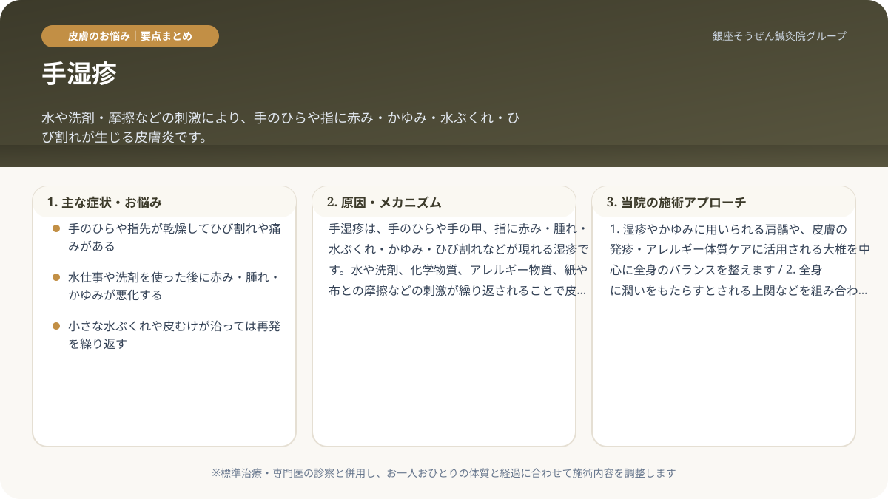

手湿疹の鍼灸
水や洗剤・摩擦などの刺激により、手のひらや指に赤み・かゆみ・水ぶくれ・ひび割れが生じる皮膚炎です。
まず知っておきたい要点と改善の流れ

手湿疹は、手のひらや手の甲、指に赤み・腫れ・水ぶくれ・かゆみ・ひび割れなどが現れる湿疹です。水や洗剤、化学物質、アレルギー物質、紙や布との摩擦などの刺激が繰り返されることで皮膚のバリア機能が損なわれて発症します。体質や他の皮膚疾患が背景にあることもあり、バリア機能が低下したまま放置すると細菌や真菌による二次感染を起こすリスクがあるため、早めの皮膚科相談が大切です。
このようなお悩みはありませんか？
- ✓手のひらや指先が乾燥してひび割れや痛みがある
- ✓水仕事や洗剤を使った後に赤み・腫れ・かゆみが悪化する
- ✓小さな水ぶくれや皮むけが治っては再発を繰り返す
- ✓手荒れが慢性化して膿や強い腫れが出ないか不安
当院の施術アプローチ・改善の流れ
なぜ鍼灸で改善へ向かうのか？（作用機序の図解）
手湿疹に対する鍼灸は、神経性炎症・掻痒（かゆみ）伝達と自律神経の鎮静機序を通じて、お体本来の回復力を引き出します。

湿疹・傷口への直接刺激を避け、曲池・血海・築賓・三陰交など全身の調整穴へアプローチします。
痒み感覚を伝える神経経路の過敏性を鎮め、「かゆい→掻く→悪化」の悪循環を断ちます。
交感神経の過緊張や夜間覚醒を和らげ、皮膚の修復が進みやすい血流と睡眠環境を整えます。
標準の保湿・外用・内服治療と協調し、ストレスや季節変化で悪化しにくい土台を支えます。
院長YouTube解説・関連動画
手湿疹の症状は、赤みのある腫れや水ぶくれ、かゆみ、ひび割れ
手湿疹の症状は、赤みのある腫れや水ぶくれ、かゆみ、ひび割れなどです。症状は、手のひらや手の甲や指に現れます。
どのような症状が現れるのかについては人によって様々で、丸い湿疹が現れることもあれば、ぶつぶつとした発疹が現れることもあります。症状の範囲も、一部分だけであることもあれば、広範囲に広がることもあります。
手湿疹は多くの人々にとって非常に不快な状態であり、日常生活においてさまざまな症状が現れます。この症状は個人差があり、軽度から重度まで様々です。
1. 赤み
手湿疹の最も一般的な症状の一つが赤みです。皮膚の炎症が引き起こされると、手の皮膚が赤くなり、しばしば熱を持つことがあります。この赤みは、特に手のひら、指、手の甲などに現れることが多いです。
2. かゆみ
湿疹の症状として非常に一般的なものがかゆみです。このかゆみは時として激しく、夜間の睡眠を妨げることもあります。また、かゆみを感じることで掻きむしることが増え、さらなる皮膚のダメージや感染のリスクを引き起こす可能性があります。
3. 水ぶくれ・水疱
水ぶくれや水疱は、特に刺激性接触性皮膚炎やアレルギー性接触性皮膚炎の場合によく見られる症状です。これらの小さな水疱は破れると液体が出ることがあり、その後で皮膚が乾燥し、さらなる症状を引き起こす可能性があります。
4. 乾燥とひび割れ
手湿疹の中には、皮膚が非常に乾燥し、ひび割れることがあります。この乾燥やひび割れは、外部の刺激に対して皮膚がさらに敏感になる原因となります。
5. 皮膚の厚くなり
慢性的な手湿疹や、繰り返し掻きむしることで、皮膚が次第に厚くなることがあります。この厚くなった皮膚は色素沈着を引き起こすこともあります。
6. 疼痛
皮膚がひび割れたり、水疱が破れたりすると、時には激しい疼痛を感じることがあります。特に水や化学物質、洗剤などの刺激物に触れると疼痛が増加することがあります。
7. 腫れ
手の皮膚が炎症を起こすと、手や指が腫れることがあります。この腫れは、液体の滞留や炎症によるもので、動きに制限を感じることがあります。
8. 皮膚の色の変化
長期的な湿疹や炎症が続くと、皮膚の色が変わることがあります。皮膚が赤くなったり、色素沈着により暗くなったりすることがあります。
9. 炎症の拡大
手湿疹が改善されない場合、炎症は手の他の部分や他の身体の部位に広がることがあります。
10. 感染
皮膚のバリア機能が損なわれると、細菌や真菌などの微生物が侵入しやすくなります。その結果、感染を引き起こすことがあります。感染は黄色い膿や異臭、さらなる赤みや腫れを伴うことがあります。
手湿疹の症状は、上記のように多岐にわたります。症状が出たら、早めに皮膚科専門医に相談することが大切です。症状を放置すると、慢性化や悪化のリスクが高まりますので、注意が必要です。
手湿疹を改善するために大事なことは、原因となっている物質をできるだけ避けることです。
現れている症状に対しては、ステロイド外用などを使って改善をしていきます。多くの場合は、２～４週間で症状は軽くなります。強いかゆみがある場合は、抗アレルギー薬を使うこともあります。
1. 外用薬
ステロイド軟膏: 湿疹の炎症を抑えるための主要な薬です。使用する際は、医師の指示に従い、適切な量と期間を守ることが重要です。
非ステロイド軟膏: タクロリムス軟膏やピメクロリムスクリームなど、炎症を抑えるステロイド以外の成分を含む軟膏です。
保湿クリーム: 乾燥を防ぎ、皮膚のバリア機能を保護・回復させるためのクリームです。
2. 経口薬
抗ヒスタミン薬: かゆみの軽減に役立つ薬です。
免疫抑制薬: 重度の手湿疹や、他の方法に反応しない場合につかわれます。
3. フォトセラピー
特定の波長の光を使用して、炎症を抑える方法で、主にUVBが使用されます。
4. 生活習慣の見直し
保湿: 日常的に手を保湿することで、乾燥やひび割れを防ぐことができます。
皮膚の保護: ゴム手袋や綿手袋を使って、手を刺激物や水から守ることが重要です。
適切な洗浄: 強い洗浄剤や高温の水を避け、やさしく手を洗うことで、皮膚の乾燥や刺激を防ぐことができます。
5. アレルギーテスト
接触アレルギーが疑われる場合、パッチテストと呼ばれるアレルギーテストを行うことで、原因物質を特定することが可能です。
6. ストレス管理
ストレスは湿疹の悪化の一因となることがありますので、リラクゼーションや適切な休息、ストレス管理技法を取り入れることが大事です。
7. 食生活の見直し
特定の食物アレルギーが疑われる場合、それを回避することが効果的な場合もあります。
8. バリアクリーム
手の皮膚のバリア機能を強化するための特別なクリームです。作業前に塗布することで、皮膚を保護します。
9. 外部刺激の避ける
アルコールや化学物質、洗剤などの刺激物を避けることで、症状の悪化を防ぐことができます。
10. カウンセリング
湿疹の原因や症状、改善法についての理解を深めるため、また、ストレスや心の健康に関する相談をすることで、症状の改善に繋がることが期待できます。
手湿疹の改善法は、個人の症状や原因に応じて選択されます。専門家の意見を取り入れることが大切です。
食べ物：一部の人々は、特定の食べ物に反応して湿疹が発生または悪化することがあります。以下は一般的な食物アレルギーの原因とされる食べ物ですが、これらが必ずしも手湿疹の原因となるわけではありません。
て湿疹の原因となる可能性のある食べ物には、卵や乳製品、ナッツ類（特にピーナッツ）、魚や甲殻類、大豆製品、小麦などがあります。
刺激物：以下のものは、直接的に皮膚に触れることで、手湿疹の原因となる、または既存の症状を悪化させる可能性があります。
洗剤: 日常的に手を洗う際に使用する洗剤や、洗濯洗剤が刺激となることがある。
石鹸やボディウォッシュ: 強い洗浄力を持つ製品や香料を多く含むものは刺激的であることがある。
消毒液: アルコールなどの成分が含まれる消毒液は乾燥や刺激の原因となる場合がある。
ゴム: ゴム手袋などに含まれる化学物質が原因となることがある。
金属: 例えば、ニッケルなどの金属に対するアレルギーが原因となる場合がある。
化粧品: 手に直接使用するものや、顔用の化粧品が手に触れることで刺激を受けることがある。
植物: 一部の植物、特に庭いじりや農業に関わる作業をする際に触れる植物に反応することがある。
業務関連: 美容師や看護師、清掃員など、特定の業務を行う際に使用する化学物質や頻繁な手洗いが原因となる場合がある。
これらの食べ物や刺激物が手湿疹の原因となるかどうかは、個人差があります。もし特定の食べ物や刺激物に関連して手湿疹の症状が出現すると感じた場合、改善のためにはそれらを避けることが大事です。
手は、いろいろなところに触れるものです。そのため、触れたものが刺激になったり、触ったものに対してアレルギー反応を起こしたりすることが多いです。
手湿疹が現れているときは、直接刺激になるものに触れないように手袋をつけるたり、手がぬれたときにすぐに水分をふいたりすることを心がけましょう。
手湿疹が改善した後も、こまめに保湿をして再び荒れないように気をつけましょう。
ツボの位置と押し方
肩髃は、腕を真横に上げたときに肩関節に現れるくぼんでいる場所です。
押すこともお勧めですが、肩髃と一緒に巨骨と肩髎もカバーするようにしてホッカイロを貼って温める方法も効果的です。
大椎は、頭を前に倒したとき飛び出る背骨の真下を押して痛みを感じる場所です。首の付け根を手で探りながら頭を前に倒すと探しやすいです。
押すときは、ゆっくりと押します。お灸やホットタオルなどで温める方法も効果的です。
上関は、こめかみの少し下にあるツボで、頬骨のすぐ上の小さなくぼみにあります。
ストレスを抱えている人や肌が荒れている人は、特に念入りに押すことをお勧めします。
皮膚・アレルギー・帯状疱疹・脱毛症の全身ツボ図解
実際の施術ではお一人おひとりの体質・症状に合わせて選穴しますが、アトピー性皮膚炎・慢性蕁麻疹・帯状疱疹痛・円形脱毛症の全身調整の臨床でよく用いられる代表的なツボの目安です。

📌 代表的なツボの詳細一覧表を開く（6穴） ▼
| ツボ名 | 位置の目安 | 主な狙い | セルフケアの注意点 |
|---|---|---|---|
| 百会（ひゃくえ） | 頭頂部の中央 | 頭皮の微小循環（円形脱毛症等）とストレス性のかゆみ鎮静 | 皮膚に炎症や傷がある部位は避けて施術します。 |
| 曲池（きょくち） | 肘を曲げた外側のシワの先端 | アトピー・蕁麻疹のかゆみ（掻痒感）軽減の最重要穴 | 皮膚科の標準外用薬・内服薬と併用して行います。 |
| 合谷（ごうこく） | 手の甲、親指と人差し指の間 | 帯状疱疹痛の鎮痛補助・皮膚バリアの自律神経調整 | 帯状疱疹は発症早期の抗ウイルス薬内服が最優先です。 |
| 血海（けっかい） | 膝のお皿の内上角から指3本分上 | かゆみ・赤み・蕁麻疹の血流バランス調整 | 曲池と組み合わせる「曲池・血海」は皮膚ケアの定番です。 |
| 足三里（あしさんり） | 膝の下外側、指4本分下 | 腸管免疫と皮膚の回復力サポート | 慢性的な皮膚トラブルの体質づくりに用います。 |
| 三陰交（さんいんこう） | 内くるぶしの上から指4本分上 | 夜間のかゆみによる睡眠障害・乾燥肌の巡り改善 | 掻き壊しのある皮膚は避け清潔を保ってケアします。 |
国際査読論文の科学的エビデンス
国際的な医学データベース（PubMed・Cochrane等）で報告されているアトピー性皮膚炎・慢性蕁麻疹・帯状疱疹痛・円形脱毛症の全身調整領域の代表的な査読済み鍼灸研究をまとめています（標準治療との併用や研究上の限界を含めて正確に掲載）。
📚 査読論文データ・PubMed出典リンクを開く（4件） ▼
| 年・研究デザイン | 対象・規模 | 主な結果 | 限界・出典 |
|---|---|---|---|
| 2023年 多施設3群RCT | 慢性特発性蕁麻疹 330名（3大学病院） | 4週時のUAS7変化量は真鍼-8.2 vs シャム-4.1 vs 待機-2.2と統計的有意差を確認。 | 最小臨床的重要差には未達・短期追跡。 Ann Intern Med (PMID: 37956431) |
| 2024年 メタ解析 | アトピー性皮膚炎 8 RCTs（n=463） | SCORAD（MD -10.61, p=0.004）、掻痒VAS（MD -14.71, p<0.00001）、DLQI（p<0.0001）が有意改善。 | EASI・IgEは有意差なし、大規模検証が課題。 BMJ Open (PMID: 39638592) |
| 2021年 シャム対照RCT | 軽〜中等症アトピー性皮膚炎 36名（韓国） | 4週時の総SCORAD変化は真鍼-11.83 vs シャム+0.45（P<0.0001）、終了4週後も持続。 | 単施設・小規模（重症例への外挿は慎重）。 BMC Complement Med Ther (PMID: 33926433) |
| 2023年 メタ解析 | 難治性掻痒（尿毒症性掻痒）7 RCTs（n=504） | 通常治療比で有効率RR 1.28（P=0.003）、透析併用でRR 1.42（P=0.0002）と有意に掻痒軽減。 | 透析患者対象のため一般皮膚疾患への外挿に留意。 J Pain Symptom Manage (PMID: 36055470) |
参考文献・出典
- 2023年 多施設3群RCT（慢性特発性蕁麻疹 330名（3大学病院））— Ann Intern Med (PMID: 37956431)
- 2024年 メタ解析（アトピー性皮膚炎 8 RCTs（n=463））— BMJ Open (PMID: 39638592)
- 2021年 シャム対照RCT（軽〜中等症アトピー性皮膚炎 36名（韓国））— BMC Complement Med Ther (PMID: 33926433)
- 2023年 メタ解析（難治性掻痒（尿毒症性掻痒）7 RCTs（n=504））— J Pain Symptom Manage (PMID: 36055470)
よくある質問（FAQ）
Q. 手がひび割れて膿が出ている場合も鍼灸で対応できますか？▼
Q. 治った後に再発を防ぐコツはありますか？▼
あわせて読まれる関連疾患（皮膚のお悩み）
膝から下や足関節周囲に網状の皮斑と強い痛みを伴う潰瘍を繰り返す難治性疾患です。皮膚科管理と併用し、潰瘍予防と回復を支えます。
花粉が肌に付着することでまぶたや頬、首に乾燥・赤み・かゆみが起きる皮膚炎です。保湿と避粉に加え、4つのツボで体質を整えます。
黄色ブドウ球菌などの細菌感染で皮膚や皮下に膿が溜まる感染症です。抗菌薬や外科処置を最優先に、安定期の体質ケアを支えます。
自己免疫が筋肉や皮膚を攻撃し筋力低下や倦怠感を起こす膠原病（指定難病）です。専門医治療を最優先に、安定期の体調維持を支えます。
自己抗体により皮膚や粘膜に水疱・びらんが生じる指定難病です。専門医の免疫抑制療法を最優先に、安定期の体調ケアを補完的に行います。
皮膚から皮下脂肪にかけて細菌が感染し赤く腫れて痛む急性感染症です。抗菌薬治療が必須で急性期は禁忌、完治後の体調ケアに対応します。
CLINICAL RECOVERY CASES
✨ 実際の臨床改善事例・回復経過を見る
銀座本院をはじめ各院での実際の改善事例を症状別に絞り込んでご確認いただけます。
おひとりで悩まず、まずはご相談ください
銀座本院・川口・大宮・横浜・博多・田無の各院でご予約を承っております。